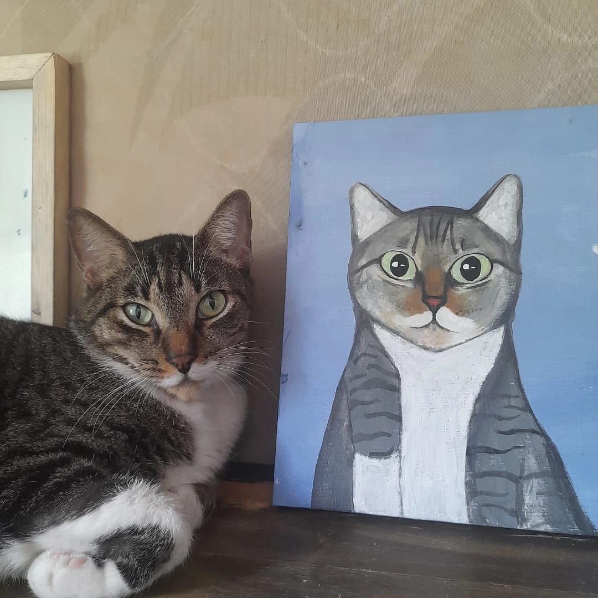
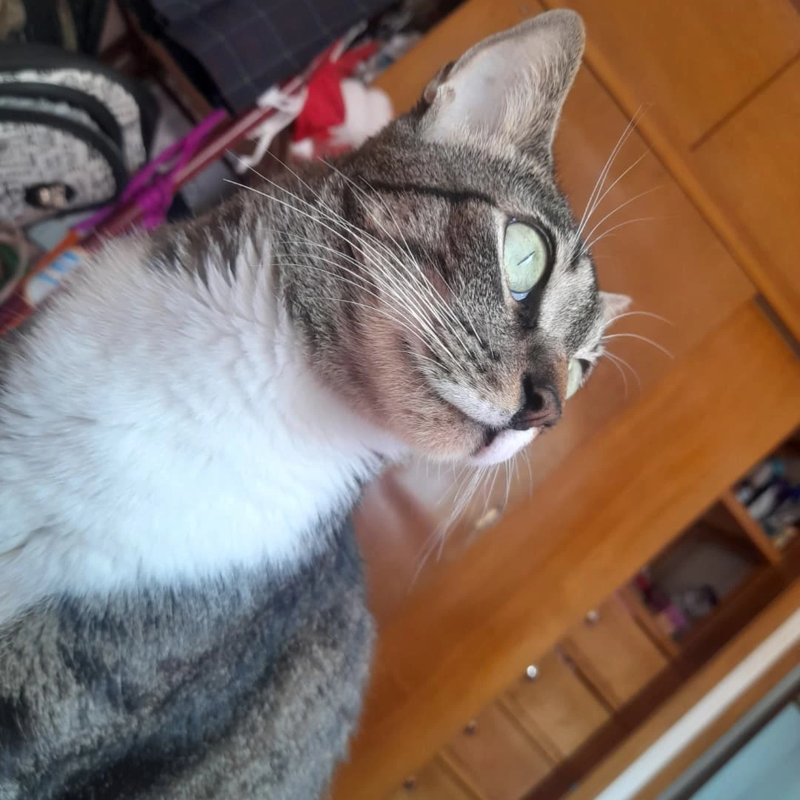
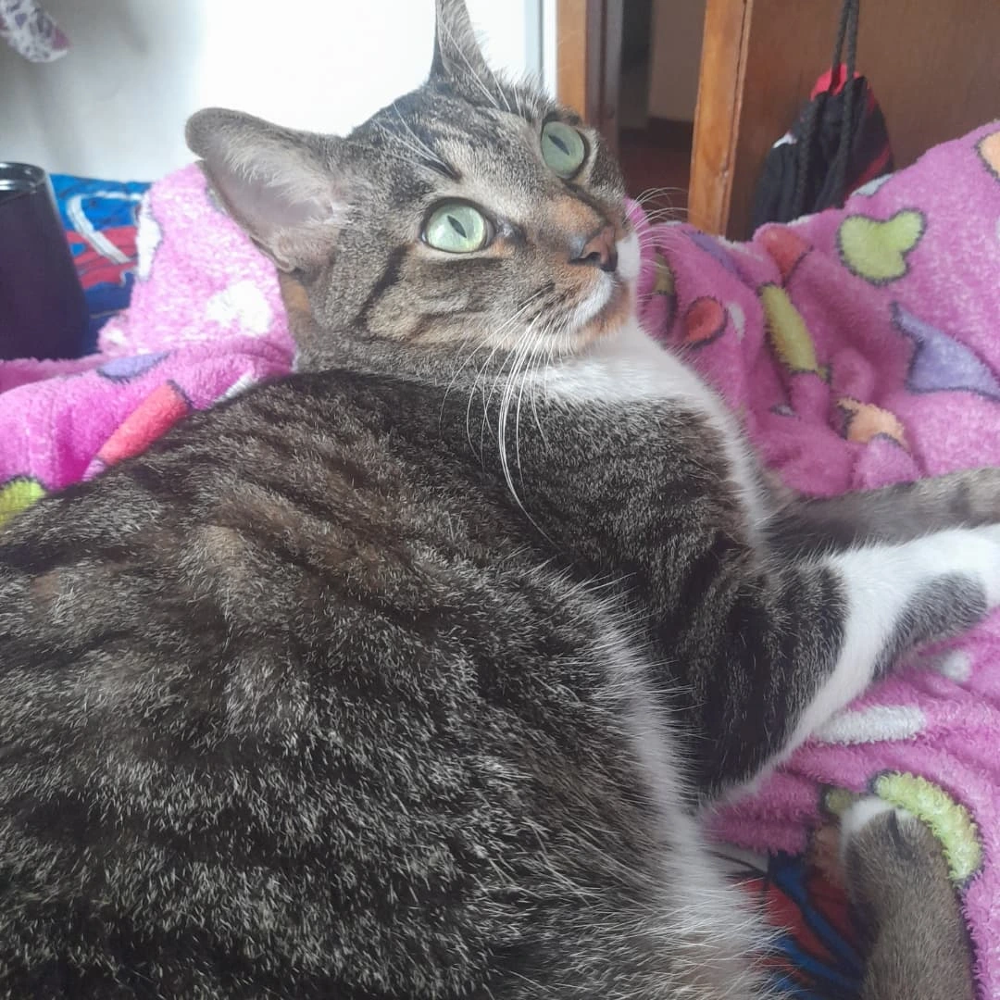
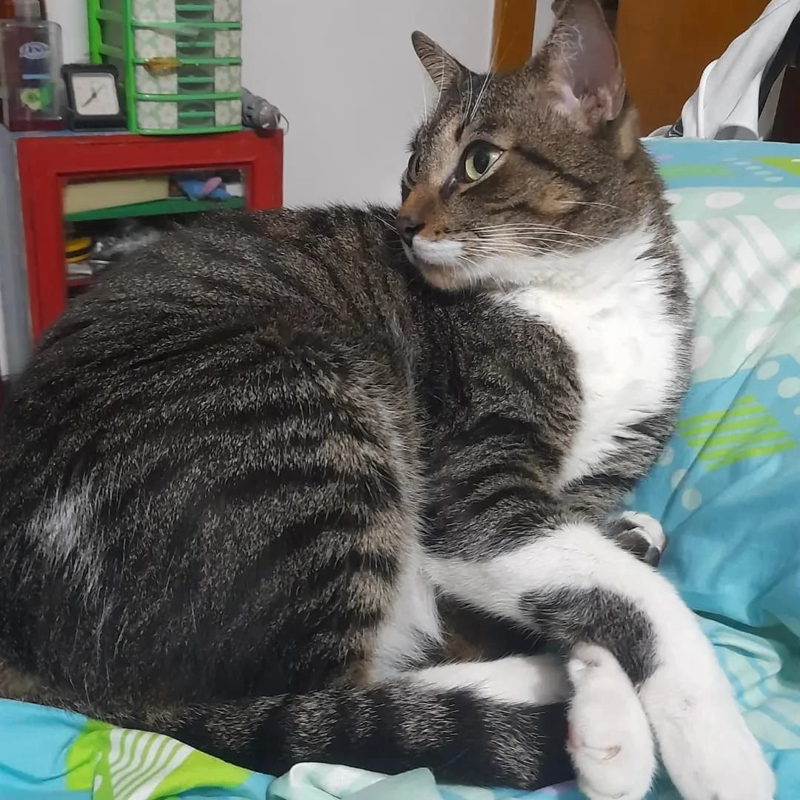
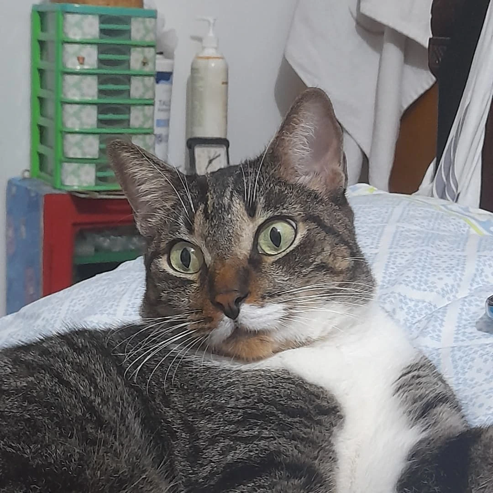
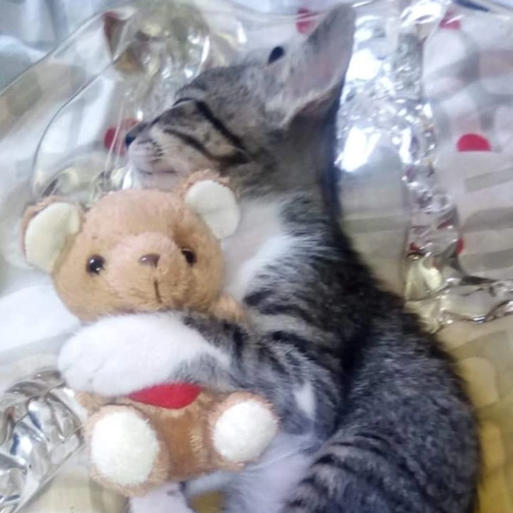
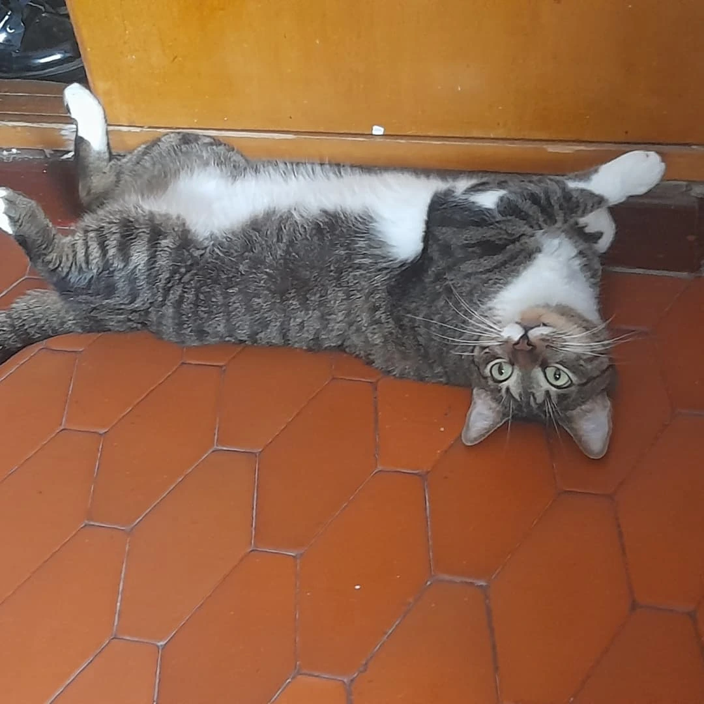

En memoria de un compañero de la vida







Los grandes no siempre entienden
por qué duele tanto
la ausencia de algo tan pequeño.
Pero tú no eras pequeño.
Eras de esos seres
que solo se ven bien con el corazón.
Seis años.
Para los grandes, quizás, no es mucho.
Para los que saben mirar,
fue toda una vida compartida —
crecer juntos, acompañarse,
ser el uno para el otro
sin necesitar explicarlo.
Eras único en tu planeta,
y eso es algo muy serio.
Cuando llegó el momento
te despediste con tus ojitos,
y quizás esa fue tu manera de decir
lo que las palabras nunca habrían alcanzado.
Ahora estás en algún lugar
donde no hay dolor,
donde el tiempo no pesa
y los atardeceres duran
todo lo que uno quiera.
Descansa.
Los que saben mirarte bien
te llevan por siempre
en esa parte del pecho
que no tiene nombre
pero que duele
cuando está vacía.
Te amamos, mi niño.






